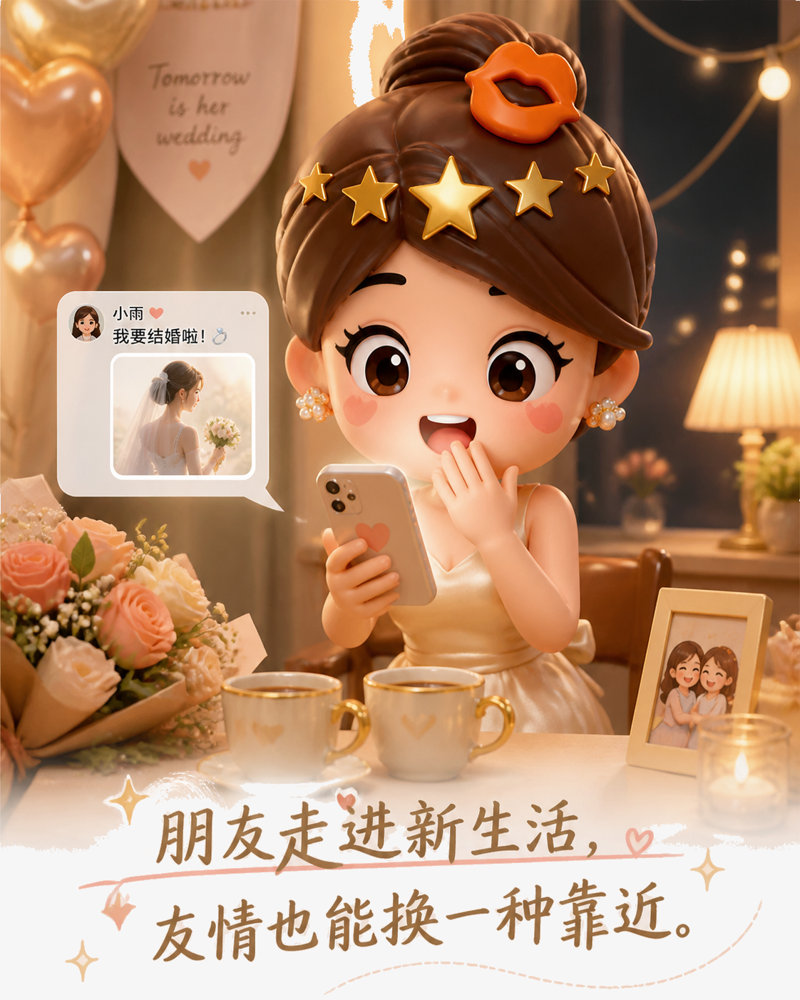
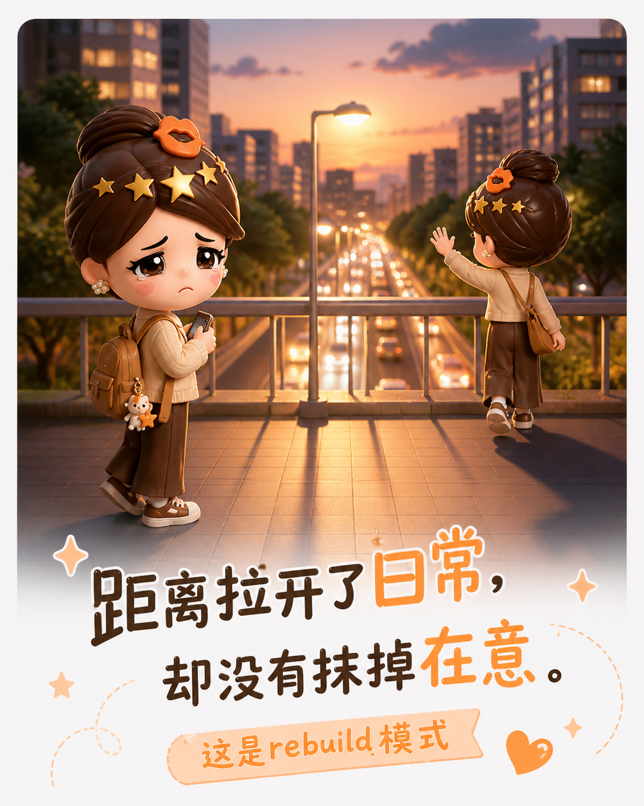
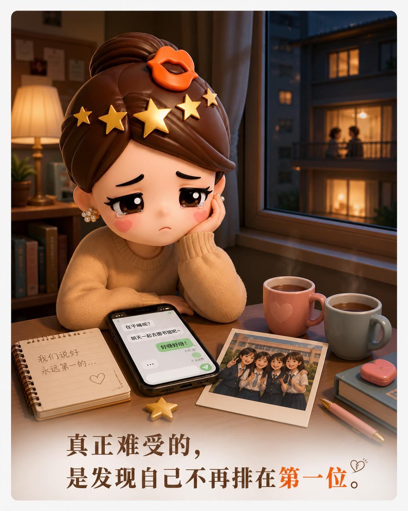
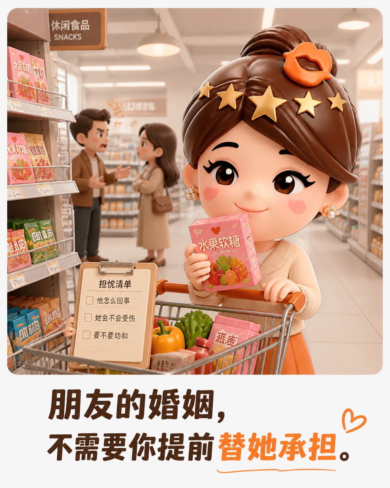
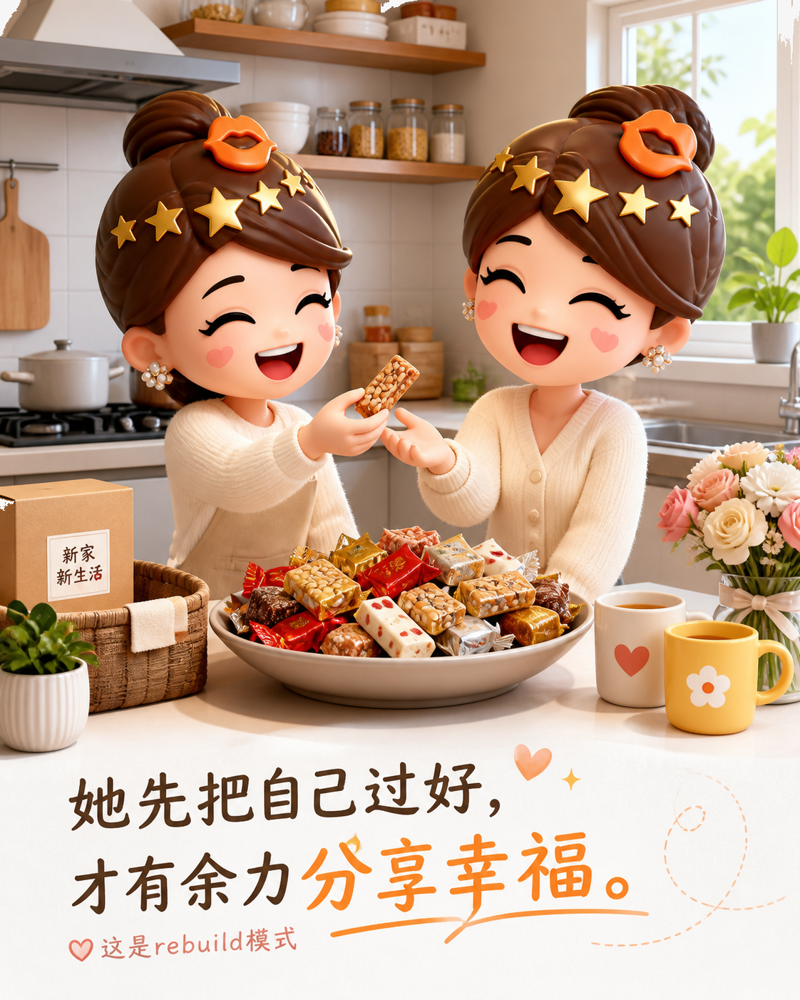

好友结婚后，友情要学会换挡
最好的朋友进入婚姻，不等于你们的故事结束；真正需要更新的，是彼此靠近的方式。
关系变远，常常先发生在细节里
好友发来婚讯时，我先说恭喜，随后却有点失落。我们从学生时代一路同行，哪怕后来异地，也靠电话和假期维持亲密。可她开始筹备婚礼后，我才发现，自己错过了许多过程：她分享的是婚房和首饰，我还在谈工作与独居。生活没有争吵，却悄悄换了频道。

失落的核心，不是被抛下
我难过的并非她要结婚，而是突然意识到：我不再是她生活里默认的第一联系人。曾经生病、考试、失恋，我们总能立刻赶到对方身边。那些共同熬过的时刻，让我误以为好朋友就该持续参与彼此的每个难关。可人的成长并不同步，人生也会出现朋友无法代办的部分。

更深的焦虑是：如果她在婚姻里受伤，我还能不能像从前那样帮她？答案或许不是提前替她担心，而是承认亲密关系有边界。朋友可以倾听、提醒、在需要时伸手，却不能替另一个成年人生活，更不能把对方的幸福当成自己的责任。

重新做朋友，而不是追回旧位置
后来她寄来一大盒家乡糖果，还特意叮嘱把我最爱吃的那一种多留一些。那一刻我明白，她确实进入了新生活，却没有因此忘记我。她的优先级首先是把自己过好，然后才有余力分享快乐；这不是友情降级，而是关系成熟。

所以，好友结婚后，最好的回应不是黏住她，也不是提前排练失去，而是更新相处规则：少一点默认，多一点询问；少一点替她做决定，多一点尊重她的选择。她仍然是那个会记得你口味的人，而你也可以成为一个不占据她人生、却始终可靠的朋友。
